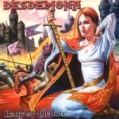

|
|
||
Desdemona : Lady of the Lore (2002) |
|

http://www.loreofdesdemona.it |
1. Black Lady 8:25 |
6.8/10 |
|
Desdemona es otra joven banda italiana que hace power metal épico y sinfónico, y "Lady of the Lore" es en general el disco que se podía esperar de una banda así: letras de fantasía, teclados por doquier etc. Sin embargo este lanzamiento no me ha terminado de convencer. A las canciones les falta fuerza, como casi siempre que son los teclados los que llevan el peso de las melodías, y además son muy largas, con lo que se echa en falta más variedad. Por otra parte el disco tampoco anda sobrado de velocidad y tiene partes instrumentales largas, razonablemente elaboradas, pero algo lentas y que llegan a cansar. No todo van a ser cosas malas. La voz de Andrea Marchisio es buena, vibrante, clara y potente, aunque no tenga un gran rango de tonos. Las letras también están bastante trabajadas y no se limitan a las cuatro tonterías habituales y completamente superficiales sobre los mismos temas recurrentes que vemos en otras bandas que hacen este tipo de música. La presentación está bastante cuidada y la grabación es buena, a pesar de que los teclados tienen demasiado protagonismo y la batería suena demasiado para mi gusto. "Black Lady" no está mal, pero aunque el doble bombo marca el paso, no consigue imprimirle un ritmo rápido y se hace algo pesada. La guitarra suena, pero la melodía la marcan los teclados. Además se hace larga y un poco repetitiva. En "Shadows of my Life" encontramos algo más de variedad en los ritmos, pero los teclados siguen gobernando sobre la guitarra. El estribillo está bien pero las partes más lentas de nuevo se hacen aburridas. En "Event Horizon" por fin tenemos un tempo rápido, con el ritmo impuesto por el doble bombo. El estribillo es pegadizo y uno de los mejores momentos del álbum. Los solos instrumentales son complejos, rápidos y están bien ejecutados. La cuarta pista, "Lancelot", nos trae sonidos medievales y un tempo moderado con varios cambios, que culminan en el estribillo, rápido, épico y potente. También encontramos largos periodos instrumentales, con partes algo cansinas y momentos brillantes. "Othello's Crying" es una balada emocionante y sentida, sobre todo en el estribillo y, curiosamente, quizás sea la canción donde las guitarras son más evidentes. "Neptune the Mystic" es un tema rápido, aunque con cambios de ritmo. Lo mejor de esta canción es la música, salvo por algún solo algo lento que hay por ahí, pero la voz es de tono demasiado uniforme y cansa un poco. El séptimo corte "If I Were Fire", ofrece velocidad, melodía dominada por los teclados, aunque esta vez bastante contundentes y más notablemente acompañados por las guitarras y un buen trabajo en las voces. En "Changing Skin" encontramos de nuevo que en general la voz es demasiado uniforme, en cambio en el estribillo si que consigue un resultado brillante. Por lo demás otra canción en el estilo de las anteriores del álbum. |
||
Rubén Béjar |
||